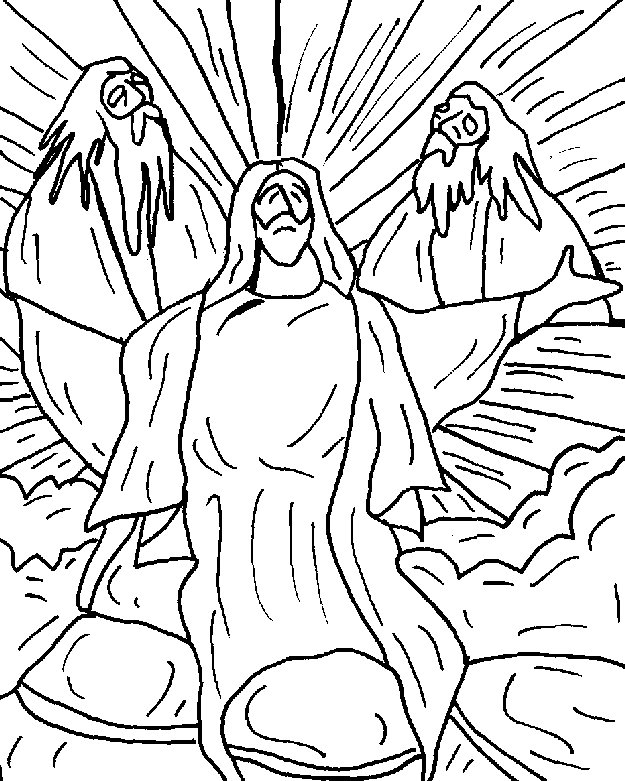

This week's lessons: 2 Kings 2:1-12, Psalm 50:1-6, 2 Corinthians 4:3-6, Mark 9:2-9
This
week's lessons: 2
Kings 2:1-12, Psalm
50:1-6, 2
Corinthians 4:3-6, Mark
9:2-9
http://www.mscperu.org/caricaturas/graficoslit/cuaresma_pascua/02_cua_b.htm
Misioneros Del Sagrado Corazón en el Perú
Free, Public Domain and Royalty Free Materials, not to be sold http://applesaucekids.com/
Next week's lessons: Genesis 9:8-17, Psalm 25:1-10 , 1 Peter 3:18-22 , Mark 1:9-15